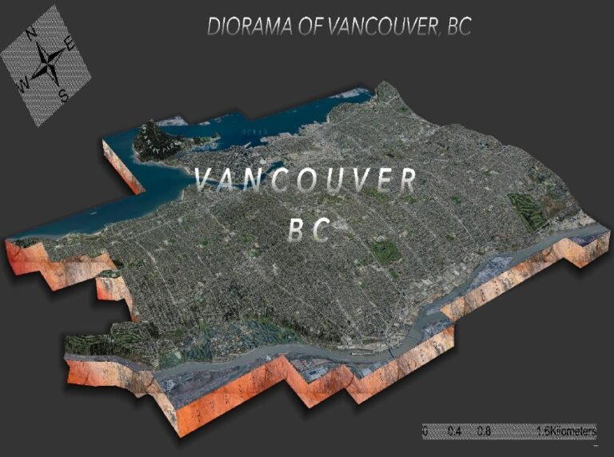

Publications
As a Writer & Editor at GoGeomatics Canada, I research, write, and edit articles on geospatial technologies, GIS, remote sensing, and mapping innovations.

Vancouver’s Future: Sustainability Driven by Geospatial Techniques
An exploration of how geospatial technology is shaping Vancouver’s sustainability efforts, from urban planning to environmental conservation.
Read MoreLiDAR CANEX 2025: Keeping it Classy and Having a Blast with NV5
An inside look at LiDAR CANEX 2025, where NV5 showcased cutting-edge LiDAR innovations and their impact on geospatial technology and infrastructure development.
Read MoreExplore more of my articles on the GoGeomatics Canada Website.